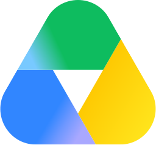

משרד נזקי גוף בתל אביב
300 מסמכים בחודש נכנסים בוואטסאפ ובמייל: מסמכים רפואיים, ייפויי כוח, אישורי מחלה. כל אחד נוחת בתיק הנכון.
ואף אחד במשרד לא פותח אותם.
למשרדי עורכי דין

ומה עשו המשרדים שיצאו מהלופ הזה?
בלי עלות · בלי התחייבות
משרדים ומוסדות שעובדים איתנו
ועכשיו תשאל את עצמך - כמה מהשעות האלה אתה מעביר על ביצוע משימות של מזכירה או מנהלת משרד?
אני מדבר עם עורכי דין כמעט כל יום. כמעט כולם מספרים לי איך הם הפכו להיות המזכירה של המשרד.
גם אתה מרגיש ככה?
שכשהערב מגיע, אתה חוזר להיות מתמחה?
והכי מוזר, שברוב המשרדים יש מערכות ניהול, מנוי לנבו וכלי AI.

אתה לא אמור להסביר לו כל יום מחדש.
מערכת ניהול מתעדת את הדאטה שאתה מכניס אליה. אז אם שכחת להכניס מסמך, תגלה שהוא חסר ערב לפני הדיון.
המשרדים שיצאו מהלופ הזה לא שילמו על עוד כלי. הם עשו משהו אחר לגמרי.
ובכל זאת, הם הפסיקו להיות המזכירה והמתמחה של עצמם.
300 מסמכים בחודש נכנסים בוואטסאפ ובמייל: מסמכים רפואיים, ייפויי כוח, אישורי מחלה. כל אחד נוחת בתיק הנכון.
ואף אחד במשרד לא פותח אותם.
לקוח שעוד לא שלח תלוש מקבל תזכורת, ועוד אחת, עד שהוא שולח.
ואף אחד במשרד לא כתב לו מילה.
תיק של מאות עמודים. בבוקר כבר מחכה טיוטה, וכל סתירה בין המסמכים מסומנת.
ואף אחד לא נשאר בשביל זה במשרד עד עשר וחצי בלילה.
אז מה הם עשו? המשרדים האלה שחייהם השתנו?
עודכנית, וואטסאפ, מיילים, נט המשפט, ליגל, קליגל, נבו, you name it. מחברים את הכלים הטכנולוגיים שכבר קיימים במשרד, בדיוק איך שהמשרד עובד, ואף אחד לא צריך ללמוד כלום.
הדגמה עם נתונים בדויים.
הכל מדבר אחד עם השני, ומגיע ללוח נתונים חי.
כל מה שנשאר לך בבוקר: להגיד בוקר טוב, ולראות מה מחכה לך.
הוא כבר לא כותב מאפס. הטיוטה מחכה לו, והוא מאשר, מתקן, או פוסל.
כי מה שיוצא תחת השם שלך, הוא באחריותך.
ומה קרה למזכירה ולמתמחה?
לכבוד: המשרד שלי
הנדון: פיטורים מתפקיד המזכירה והמתמחה
החל מהיום, אני לא מתייק מסמכים, לא רודף אחרי לקוחות ולא כותב מאפס עד עשר וחצי בלילה.
בברכה, עורך הדין
מאושר ✓אנחנו לא מוכרים AI. אנחנו מחזירים לך את הערב השקט בבית.
שיחה של 20 דקות, בלי עלות
את זה נראה לך לפני שאתה משלם שקל.
מבינים איך המשרד שלך עובד, ומראים לך איך זה ייראה אצלך.
ממפים את המשרד עד הסוף, ובונים הדגמה שעובדת, כדי שתראה הכל לפני שבונים.
ומעכשיו המערכות שלך עובדות בשבילך, ולא אתה בשבילן.
"זה ממש עוד אני - שיודע לעבוד במקביל, בלי להתעייף."סמדר, עורכת דין
"כמות הזמן שהתפנתה לי בעקבות זה - היא ההבדל בין להספיק 'ככה-ככה' לבין לנהל באמת את התיק."אופיר, עורך דין, מקרקעין ומכרזים
"אני רואה מה הוא שלח, אני רואה גם שזה תויק... אני יותר רגוע."עו"ד תום גיצה, נזקי גוף
הפער לא בטכנולוגיה. הוא בשיטה.
את החיבור בין AI לעבודה המשפטית התחלתי לבנות לפני ארבע שנים, כשרוב עולם המשפט עוד שאל אם מותר לגעת ב-AI. היום אני חוקר Legal AI באוניברסיטת בר-אילן, מרצה לעורכי דין ולסטודנטים, ומנהל את הקהילה "בינה מלאכותית במשפט הישראלי". כאן אני בונה את הצד המשפטי: הטיוטות, והבדיקה מול התיק ומול הפסיקה.
ליגל פלאו שותפה בתוכנית השותפים של Anthropic, החברה שמאחורי Claude. ומאחורי כל תחום יושב עורך דין מומחה מהרשת שלנו: רשלנות רפואית, ליטיגציה, משפחה, מקרקעין ועוד.
אני לא חברת תוכנה. אני החייט. אני מבין איפה המשרד מאבד את הזמן, ובונה בדיוק את מה שעוצר את זה: המסמכים, הלקוחות, התזכורות והחיבורים בין המערכות.
10 שנים של עבודה עם בעלי עסקים, 7 שנים בבניית מערכות. העיקרון: או שזה מחזיר כסף, או שזה חוסך זמן. אין אוטומציות ליופי.
כיום אני עובד בשותפות עם חברת ליגל פלאו בפתרונות של תהליכי אוטומציה ו-AI.
שיחה של 20 דקות, בלי עלות
מלא את הפרטים, ומיד תעבור ליומן לבחור שעה שנוחה לך.
הקבצים נשארים במקום שהמשרד אישר, כל מערכת מקבלת רק את ההרשאה שהיא צריכה, והכל מתועד.
לא. מה שיש לך נשאר. מחברים אותו, ובונים מעליו.
כל ממצא מגיע עם העמוד במקור שממנו הוא נלקח, ושום דבר לא יוצא בלי שאישרת. אתה בכיסא השופט.
מתחילים מתהליך אחד שחוזר על עצמו במשרד, ולא מכל המשרד בבת אחת. רק כשהוא עובד, עוברים לבא.
לא. אתה מסביר לנו איך המשרד עובד. את כל השאר אנחנו עושים.
לפי מה שבונים אצלך. את המחיר תדע לפני שמתחילים.
בדרך כלל כמה שבועות. המערכת עולה חלק אחרי חלק, כך שהחלק הראשון עובד אצלך עוד לפני שהכל גמור.